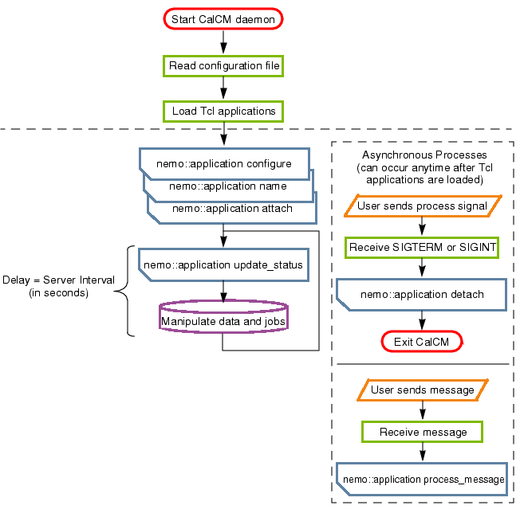

The core of
CalCM is the Network Monitor functionality, also referred to as
Nemo, whose primary role is to collect information about Calibre
jobs. All interactions with the OS and hardware for the purpose
of data collection and system monitoring are actually performed
by the Calibre primary and remote processes. The information about
the cluster state is made available to Tcl applications hosted via
the Network Monitor API (Nemo API).
Figure 1 illustrates how Nemo communicates with
Calibre jobs running on the cluster, transmits control commands,
and periodically collects relevant job and system parameters.
Figure 1. CalCM Process Flow
Note: Because, by its
nature, Calibre Cluster Manager can host external applications, which
can open and create files and network connections, running it as
“root” can be a serious security threat. An under-privileged user
account, such as “nobody”, should be used instead.